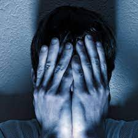
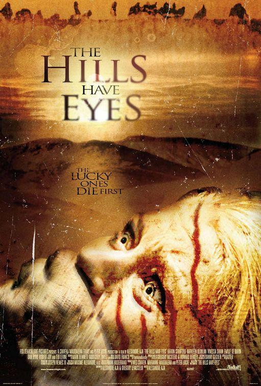
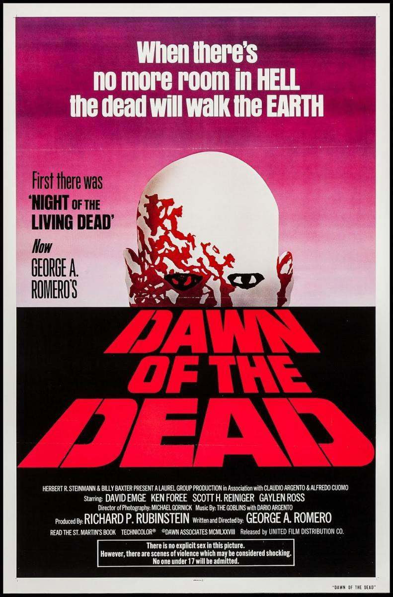
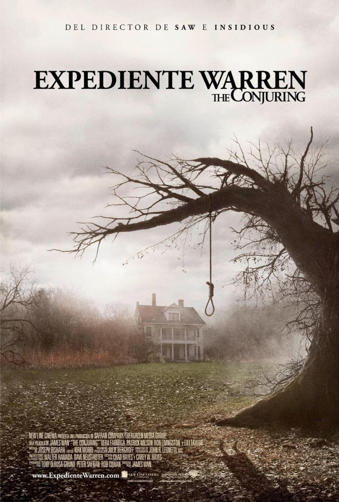

¿Qué convierte a una película de terror en terrorífica? Si pensamos en lo que hemos podido ver en los últimos 20 años, podemos pensar que lo que marca ese terror es la cantidad de trozos de carne y piel cortados en forma de cuadritos que vuelan por la pantalla. El terror siempre ha dependido en gran medida en su capacidad para asustar o inquietar, pero lo que realmente nos da pánico no ha cambiado mucho con el paso de los años: un sonido extraño al otro lado de la calle, una figura rara a lo lejos, o una sensación de que algo malo va a pasar cuando alguien abre una puerta. El cine gore tiene su sentido, pero sólo cuando está unido a una idea. Por poner un ejemplo, creemos que películas como Hostel son meras competiciones de resistencia para ver quien hace más burradas sangrientas.

Las colinas tienen miedo
Director: Wes Craven
Que no te engañe el remake de 2006, Wes Craven regaló otra de sus credenciales como maestro del terror con esta relato sobre una sociedad mutada que actúa como depredadora de todo ser varado en su zona.
Momento que más miedo da: Pese a la deformación física de sus personajes, lo mejor de la cinta es cuando no los vemos, solo el cómo observan a sus víctimas a través de unos prismáticos. Por algo ese momento dio a la película su inquietante nombre.

Nosferatu
Director: F.W. Murnau
A pesar de no llevar su nombre, todos sabemos que se trata de la historia de Drácula, un clásico inmortal del séptimo arte que “inventó” el género de terror.
Momento que más miedo da: Max Schreck y su vampiro sigue siendo tétrico, pero no hay miedo más sublime en el séptimo arte que el momento en que su sombra invade el cuerpo de su víctima hasta apretarle el corazón.
Por cierto, si te gusta el subgénero vampírico, no te pierdas nuestra lista de las 20 mejores películas de vampiros de la historia.
Zombie(Down of the Living Dead)
Director: George A. Romero
Aquí sí os recomendamos también el remake de Zack Snyder en 2004 pero siempre ganará Romero. Tras la noche, llegó el día de un mundo invadido por los zombies. La película sigue la historia de un pequeño grupo refugiado en un centro comercial.
Momento que más miedo da: No podemos elegir entre el bebé zombie o el descorazonador final.

Expediente Warren
Director: James Wan
La saga de terror más prolífica de los últimos años tuvo su cumbre en su primera entrega, el primer trabajo de los Warren ayudando a una familia en una casa más que poseída.
Momento que más miedo da: Casi todo el metraje ronda un nivel alto, pero el momento de la madre poseída quizás sea el más duro.

Saw
Director: James Wan
Otra saga del terror que se ganó a todos los fans del género desde principios de siglo. Aunque las secuelas fueron perdiendo el norte, esta película necesitó poco más que un baño y dos actores para ponernos los pelos de punta.
Momento que más miedo da: Más allá de algún jumpscares en los flashbacks nos quedamos con el momento en el que, como el protagonista, sabemos lo que hay que hacer para liberarse. Sí, coger la sierra y apuntar a tu pie.